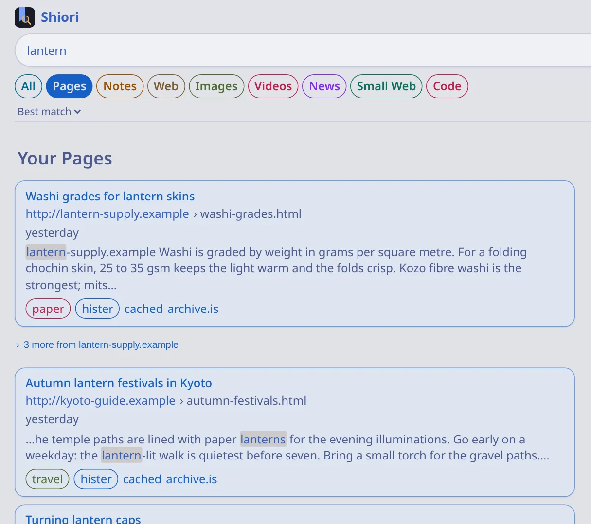
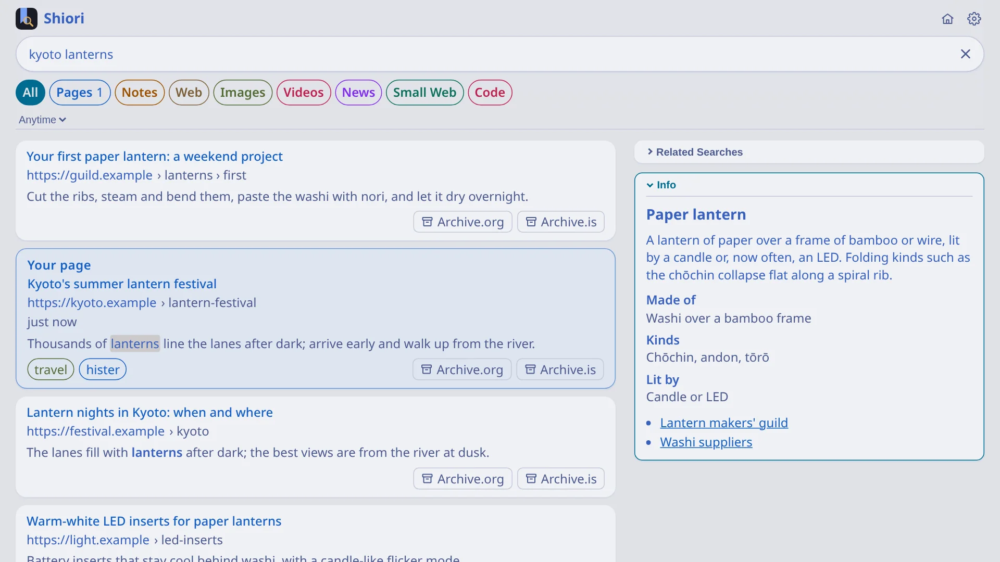
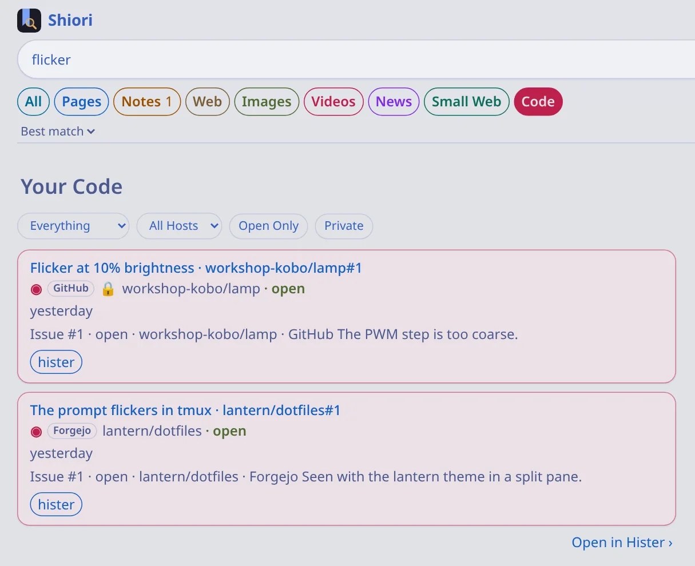

Search your pages
 Hister and Shiori
Hister and Shiori
Browse as usual in Safari, Firefox or Chrome. Later, type a word you remember and the page comes back, along with the copy Machiya saved.

Read and publish your notes

 Kura and Niwa
Kura and Niwa
Point Machiya at your Obsidian vault and your notes show up next to your pages. Read them on your phone, and publish the ones you want to share as a small website.


Search the World Wide Web
SearXNG
Web results come from SearXNG and sit beside what you've saved. The search engines see your query, not your history.

Search your code
Forgejo and GitHub
Connect Forgejo or GitHub. READMEs, issues, pull requests and releases from your repositories get a Code tab of their own.

Runs where you are
Run it with Docker or Podman. It also runs without containers on Linux, FreeBSD, NetBSD and OpenBSD.
Images for amd64 and arm64.
Shiori has apps for iPhone, iPad, Mac, Linux and Haiku, and a web app for everything else.